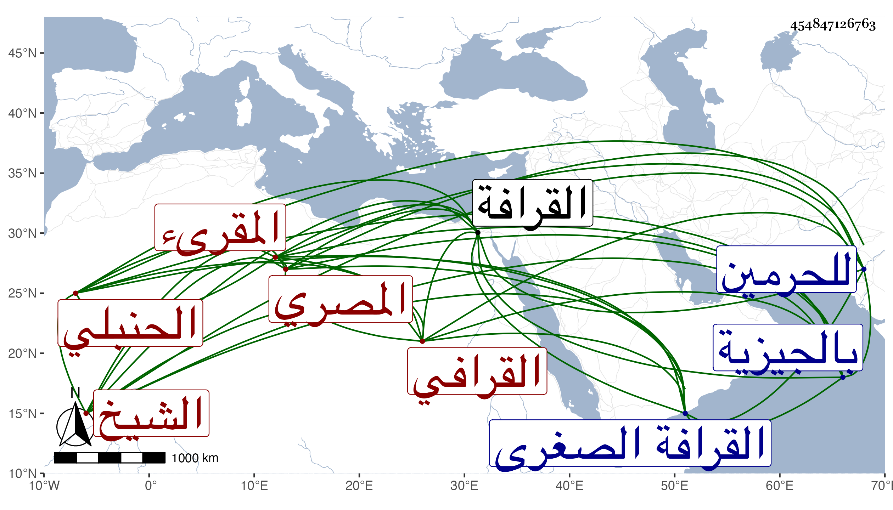

0902Sakhawi.DawLamic.ITO20230111-ara1.EIS1600.454847126763
Biography ID: 454847126763
758
خليل بن عثمان بن عبد الرحمن بن عبد الجليل الشيخ أبو الصفا القرافي المصري المقرىء الحنبلي ظنا ويعرف بالمشبب بمعجمة وموحدتين أولاهما مشددة مكسورة . ولد سنة خمس عشرة وسبعمائة تقريبا سمع من البدر بالقرافة دهرا طويلا ، وكان منقطعا بسفح الجبل ، وللملك الظاهر برقوق وغيره فيه اعتقاد كبير ويقبل الظاهر شفاعته ، وقد اجتمعت به وسمعت قراءته وصليت خلفه ، وما سمعت أشجى من صوته في المحراب . قاله شيخنا في أنبائه إلا مولده . زاد في معجمه : وكان يرتل الفاتحة ويرسل في السورة . ومن تلامذته المشهورين بحسن القراءة الزرزاري وابن الطباخ وغيرهما وقد أثبت السراج بن الملقن اسمه في طبقات القراء له ، وبيض له وأما ابن الجزري فإنه قال محرر ضابط مجود دين صالح من خيار عباد الله رأيته بمسجد اللؤلؤة من القرافة الصغرى وأخبرني أنه قرأ على إبراهيم الحكري والسراج عمر الدمنهوري ، قرأ عليه النور علي بن محمد بن المهتار والنور علي الضرير إمام الشافعي ومظفر القرافي ومحمد الزيلعي وعبد المعطي مؤذن خانقاه قوصون ، وألف كراسا في النحو ، وهو على خير كثير بارك الله له ثم أضر وأقعد . مات في سنة إحدى زاد المقريزي في عقوده في ربيع الأول ، وقال غيرهما انه كانت له طريقة في القراءة معروفة ، قال وكان ينكر على جماعة من قراء الاجواق بحيث أنه كان إذا مر بهم وهم يقرؤن يسد أذنيه ، وسيرته حسنة وطريقته جميلة وقد حبس رزقه بالجيزية جعل مآلها للحرمين وجعل النظر فيها لقاضي الحنابلة ، وكأنه حنبلي بل يقال إن العز الحنبلي جزم بذلك رحمه الله ونفعنا ببركاته .
